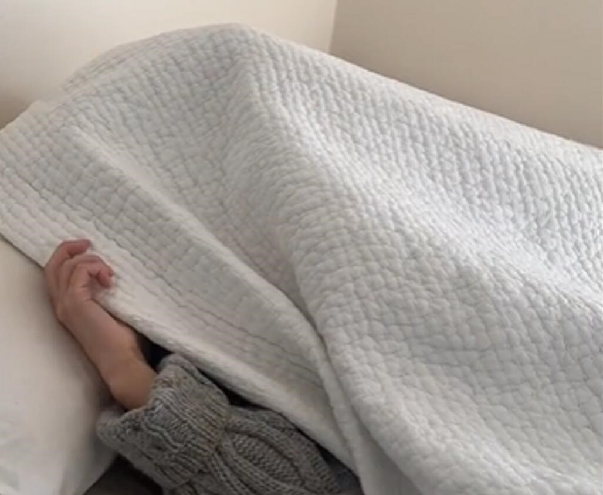

Before You Buy Magnesium Supplements From TikTok, Here's What You Need to Know
Despite popular TikTok videos showing the advantages of magnesium supplements, experts advise reading up on them and talking to a doctor before using them. Magnesium is necessary for the health of muscles and nerves, although it's ideal to obtain it through dietary sources first. More study is required, although supplements may aid with blood pressure reduction, migraine relief, and muscular cramping. Blood tests are not always reliable for detecting magnesium insufficiency, thus the best test is diet. Beans, nuts, seeds, whole grains, and leafy greens are some examples of foods high in magnesium. While different kinds of magnesium supplements offer various advantages, it's crucial to stick to the daily dosage. Before using supplements, it is recommended to speak with a doctor because they may interfere with other prescriptions. It's crucial to purchase from reliable sources, and supplements ought to have correct labels. Overall, magnesium supplements can be helpful, but it's crucial to keep an eye on their results.

Snacking: Is It Bad for You? Quality and Timing Are Important, According to New Research
It is advised to concentrate on the timing and quality of snacks in order to snack for improved blood sugar regulation and general wellness. Pick nutritious snacks including whole grains, protein, and healthy fats from top brands. Apples with almond or peanut butter, grapes or other fruit with cheese and almonds, pretzel chips or whole grain crackers with carrots and hummus are a few ideas. It's also crucial to consider when you eat your snacks. Avoid snacking after 9 o'clock at night because it has been shown that it raises triglyceride and blood sugar levels. Instead, choose to have wholesome snacks early in the day. Follow your doctor's advice on snack time if you have a medical condition that calls for more frequent eating, though.
The popularity of raw milk is rising, but is it safe to consume?
Raw milk is milk that has not gone through the pasteurization process. The sale and consumption of raw milk is debatable; some governments allow it, while others continue to impose restrictions. It is crucial to remember that raw milk involves more safety hazards than pasteurized milk, principally because ingesting raw dairy products increases the chance of contracting a food-borne disease. Consuming raw milk is not recommended, according to experts, as it can cause serious ailments including food poisoning.
Milk is heated during the pasteurization process to eradicate dangerous germs, making it safe for ingestion. The nutritional content of milk is not significantly affected by pasteurization, even if it could cause a modest reduction in some vitamins. Pasteurized milk has advantages in terms of safety that exceed any possible nutritional drawbacks.
Consuming raw milk can expose people to dangerous microorganisms including Salmonella, Brucella, E. coli, Campylobacter, Cryptosporidium, and E. coli, which can lead to food-borne diseases. These diseases can cause everything from minor symptoms like diarrhoea and nausea to more serious side effects like kidney or brain damage.
Due to the safety issues involved, registered dietitians and nutrition specialists advise against ingesting raw milk. Social media disinformation may have an impact on the popularity of raw milk, therefore it's critical to rely on reliable, scientifically sound information when making judgments regarding food safety.
It is essential to take into account the possible hazards of consuming raw milk, especially for vulnerable groups including kids, pregnant women, seniors, and those with weakened immune systems. It is ultimately up to the customer to decide whether or not to ingest raw milk, keeping in mind the accompanying safety hazards.
According to a study, older adults with vision impairments may be more likely to develop dementia.
A new study has found a link between vision impairments and dementia risk in older adults. While the study does not establish causation, previous research has shown that improving eye health can lead to improved cognitive function. Therefore, the correlation between vision impairments and dementia risk is worth considering.
Experts advise people to emphasize routine eye care, especially if they have a family history of eye problems or are over 65. To examine eye health and address any problems or symptoms connected to vision, it is crucial to see a healthcare provider. According to the American Academy of Ophthalmology, those over 65 should schedule routine eye checkups every one to two years.
Maintaining good eye health is essential since vision is a major component of memory and cognitive function. It's crucial to pay attention to any changes in eyesight since eye conditions are frequently curable. Additionally, talking about a family history of eye conditions and lifestyle choices that may have an impact on eye health will assist medical experts in making the right suggestions and treatment choices.
Overall, the connection between vision problems and the chance of developing dementia emphasizes the significance of giving eye health first priority and getting frequent eye exams. People may be able to lower their risk of dementia by taking care of any visual issues they may have and keeping their eyes healthy.
What Does "Bed Rotting" Mean? The Latest Self-Care Trend among Gen Z, Explained
A recent TikTok craze called "bed rotting" encourages people to spend long stretches of time in bed doing nothing but passive things like eating food, watching TV, and scrolling through gadgets. Most followers of this trend are members of Generation Z, who may be exhausted from their commitments to job, education, their families, or social activities. While some people may find short-term benefits from bed rotting, if it persists for more than a day or two, it may be cause for concern. Self-care is crucial to managing stress and boosting vitality, according to experts.
Bed rotting can be a sign of depression or other mental health issues. If you discover that you have been exhibiting this behavior for a long period of time, it's crucial to get treatment from a mental health expert. Engaging in regular exercise, interacting with friends and family, and practicing mindfulness are some good coping mechanisms for stress and burnout.
Could a Smartwatch Help Detect Parkinson's Disease Earlier?
A recent study found that smartwatches could offer useful information on Parkinson's disease symptoms. This is so that smartwatches can monitor how rapidly a person moves, as slower motions are frequently an early sign of Parkinson's disease. The earlier a person is identified with Parkinson's, the more time there is to develop a treatment plan and get ready for the future, according to experts.
The study uses artificial intelligence to evaluate the data of 103,712 wearers of smartwatches who recorded their activity rate throughout time periods of one week between 2013 and 2016. While the study's lead author, Cynthia Sandor, PhD, an up-and-coming leader at the UK Dementia Research Institute at Cardiff University, did anticipate spotting "subtle movement changes" in people before Parkinson's disease was identified, she and her team did not anticipate observing a decline in people's movement speeds that were comparable to those with Parkinson's.
Data from smartwatches provided a partial bird's eye picture of how people's motions changed over time and how that represented more significant changes in their general state of health. “We were further surprised by seeing how well the models trained on smartwatch data performed even in the general population including individuals diagnosed with other diseases,” Sandor said.
Most People Do not Know What a Healthy Blood Pressure Is.
The majority of Americans are unaware of what a normal or healthy blood pressure measurement is, according to a study that was written up in the journal Medical Decision Making. Blood pressure levels less than 120/80 mm Hg (millimeters of mercury) are considered normal or healthy. Although they were confident in their understanding of blood pressure, the majority of Americans were unaware of this.
Lead study author Wändi Bruine de Bruin, PhD, Provost Professor of Public Policy, Psychology, and Behavioral Science at the University of Southern California, told Health that there is little education about blood pressure in the doctor's office because visits often focus on other topics. Only about a quarter of persons in the United States who have hypertension, or high blood pressure, have it under control. Heart disease and stroke, the two major causes of mortality among Americans, are made more likely by high blood pressure.
Not Getting Enough Sleep Might Cancel Out Some Benefits You Get From Exercise
A recent study found that sleep deprivation might work against exercise's beneficial benefits on brain health. Although sleep and exercise have separate effects on brain health, if neither are getting enough of either, their effects may cancel one other out. Experts advise progressively modifying sleep and exercise routines to develop wholesome, enduring habits that support brain health.
In the English Longitudinal Study of Ageing, over 9,000 persons between the ages of 50 and 95 were tracked for more than ten years. They discovered that those who engaged in more physical activity and slept for six to eight hours every night had superior cognitive function as they aged than individuals who exercised but didn't obtain at least six hours of sleep every night.